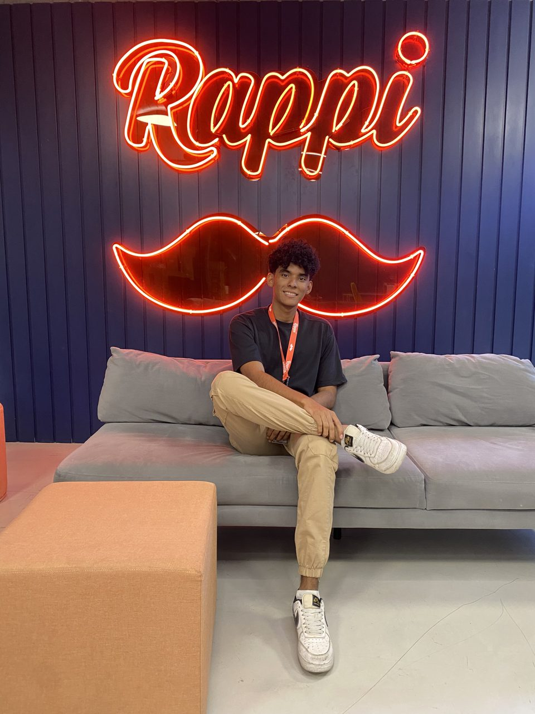

Universidad del Norte
Business Administrator con concentración en Finanzas Internacionales, Barranquilla, Colombia. Promedio acumulado de 4,33 y puntaje de 191/300 en las Pruebas Saber Pro, miembro de los "Mejores Saber Pro 2020".
Growth & CRM Analyst | AI Engineer en formación
Senior Growth Analyst CRM en Rappi. Trabajo con growth, CRM y datos, y estoy aprendiendo a construir productos y soluciones con AI.

Creo en el desarrollo personal. Soy organizado, comprometido, responsable y detallista, con buen análisis de datos, manejo del tiempo y atención al detalle, además de capacidad de investigación y trabajo en equipo. Tengo experiencia en tecnología y startups, y me interesan el growth marketing, el CRM B2C, la ciencia de datos y el crecimiento de marcas y productos, siempre buscando generar impacto en consumidores y aliados. Actualmente estoy aprendiendo a construir con AI.
Business Administrator con concentración en Finanzas Internacionales, Barranquilla, Colombia. Promedio acumulado de 4,33 y puntaje de 191/300 en las Pruebas Saber Pro, miembro de los "Mejores Saber Pro 2020".
Soledad/Atlántico. Puntaje de 334/500 en las Pruebas Icfes 2015.
Experiencia
Rappi
Rappi
Rappipay by Rappi
Rappipay by Rappi
Gestión y asesoría de portafolio de clientes de tarjeta de crédito y débito, manejo integral de casos y escalamiento.
Transportes Marsol S.A.S
Control y mantenimiento de estadísticas e indicadores de operación; seguimiento y reporte diario del control de pasajeros y vehículos; cálculo de indicadores mensuales.
Universidad del Norte
Tutorías y acompañamiento académico en Cálculo III; acompañamiento exitoso a 17 estudiantes que aprobaron la asignatura.
Referencias
Referencias laborales y académicas disponibles bajo solicitud.